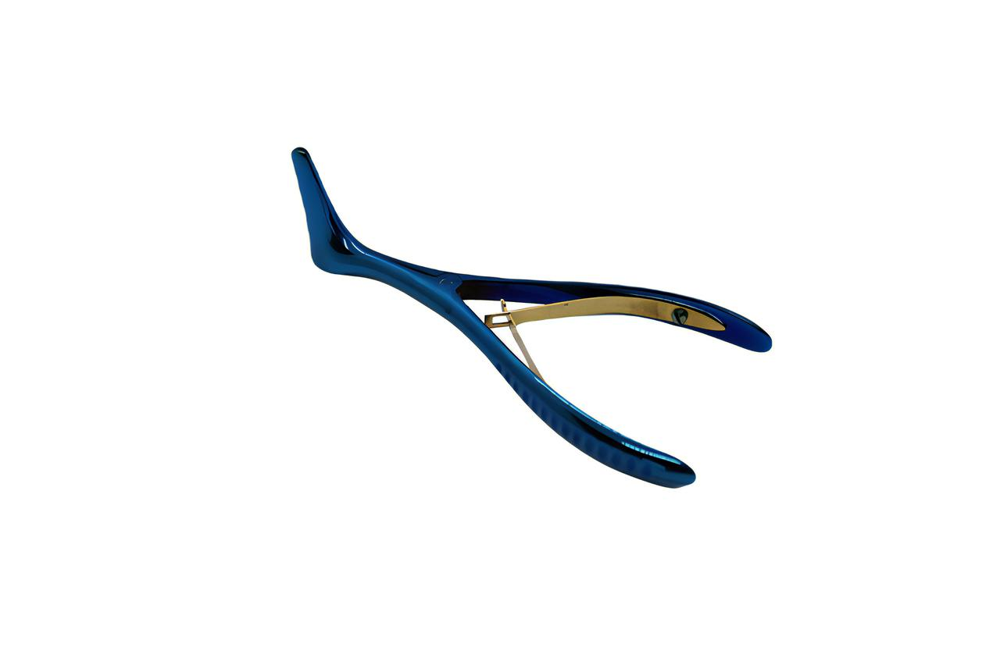

← Home
Sample inspection report
See it before it ships.
Cottle Nasal Speculum
SUR-RHI-024 · Nasal Speculums
Sample
Inspection photo 1 — overall view

Inspection photo 2 — detail view
Request a quote
WhatsApp